操作マニュアル
AIエージェント常駐型社内チャットシステム（コードネーム: Kogack）
本ドキュメントは新人社員向けAI開発研修の成果物です。画面キャプチャは実際に動作しているKogackを操作して取得したものです。
改訂履歴
| 版数 | 日付 | 改訂内容 |
|---|---|---|
| 1.0 | 2026-09-16 | 初版。要件定義書・基本設計書・詳細設計書（総論＋4分冊）が定義した機能をもとに、実際に動作するKogackを操作して全画面のキャプチャを取得し、利用者向けの操作手順としてまとめた。成果物一覧（index.html）の状態を「未着手」から「完成」に更新した。 |
| 1.1 | 2026-09-17 | ユーザーからの指摘により、非公開チャンネルへの参加に関する記述（4.1節callout・4.2節ヘッダー項目表・14章FAQ）の用語を「招待」から、実際の画面上のボタン表示（「＋ メンバーを追加」）に合わせて「追加」へ統一した。 |
| 1.2 | 2026-09-17 | チャンネルAIが「公開チャンネルへの参加方法」を尋ねられた際、非公開チャンネル限定の制約（既存の参加者による追加が必須）を一律に案内してしまう不具合の調査にともない、4.1節callout・14章FAQへ「既存の参加者による追加は公開チャンネルでも使える2つ目の参加経路である」旨を追記した。 |
| 1.3 | 2026-09-17 | ユーザーからの報告「チャンネル情報（作成者・作成日時・公開/非公開）を確認する方法をAIが案内できない」を受け、4.2節ヘッダー項目表の記述を拡充した（作成日時を追記、チャンネル管理者に限らず参加者なら誰でも確認できる旨を明記）。 |
| 1.4 | 2026-09-17 | ユーザーからの依頼でマニュアル全体を体系的に見直し、v1.0公開後（2026-09-16）に追加された機能のうち未反映だった2件を追記した：12.2節「基本設定」タブにAIモデル選択（速度・コスト・品質のトレードオフ）を追記、6.1節・11章に新設した11.5節「AIへの実際の送信内容を確認する」（チャンネル管理者向けの🔍送信内容ボタン）を追加した。 |
| 1.5 | 2026-09-17 | ユーザーからの報告「AIが要約機能の使い方を、メッセージの右クリック/ホバーメニューから要約するという誤った手順で案内した」を受け、11.2節に「要約は個々のメッセージ単位ではなくチャンネル・スレッド単位でのみ実行でき、右クリックメニュー・ホバーメニューには要約機能が無い」旨を明記した。 |
| 1.6 | 2026-09-17 | ユーザーからの報告「メッセージをコピーする方法を尋ねると一般的なチャットアプリの操作手順で案内された。右クリックメニュー（6章）の説明・案内もできるようにしてほしい」を受け、6.2節の説明を拡充した：右クリックメニューの4項目（返信する・編集する・コピーする・削除する）を明記し、表示条件（編集・削除は自分の投稿のみ、コピーは誰の投稿でも常時表示）を追記、「引用返信」「ピン留め」のような存在しない項目が無いことも明示した。 |
| 1.7 | 2026-09-17 | ユーザーからの依頼「アプリ内で参照ドキュメントをプレビューする機能を付けられますか」を受けて実装した新機能を13.2節に追記した：管理コンソールの「ドキュメント参照範囲」タブで、対応形式（画像・PDF・プレーンテキスト）のファイルは「プレビュー」ボタンからアプリ上で内容を確認できるようになった。 |
| 1.8 | 2026-09-17 | ユーザーからの依頼「AIの回答を見た後、参照した文書を実際にアプリ上ですぐ確認できると便利」を受け、11.3節に追記した：AI発言の「📄 参照: ファイル名」表示自体がクリック可能になり、対応形式のファイルはそのままアプリ上で内容を確認できるようになった（そのチャンネルの参加者であれば誰でも利用可能）。 |
| 1.9 | 2026-09-17 | ユーザーからの明示的な要望「Slackみたいに、リアクションスタンプ（絵文字）を自分で作成できる機能が欲しい」を受けて実装したカスタム絵文字機能を5.4節・6.3節に追記した：絵文字ピッカーの末尾に「＋」ボタンが追加され、名前と画像（JPEG・PNG・WebP、5MBまで）を指定して独自の絵文字を登録できる。登録は利用者全員が行え、登録した絵文字はメッセージ本文・リアクションの両方で他の絵文字と同じように使える。 |
1. はじめに
1.1 このシステムでできること
Kogack（コガック）は、社内の会話にAIエージェントが常駐する社内チャットシステムです。チャンネル・スレッド・ダイレクトメッセージ（DM）・横断検索・ファイル共有といった基本的なチャット機能に加え、チャンネルごとに専用のAIをメンションして質問したり、社内ドキュメントを参照した回答を得たりできます。
| できること | 説明 | 参照 |
|---|---|---|
| チャンネルでの会話 | 公開・非公開のチャンネルを作成し、書式付きのメッセージ・メンション・絵文字・ファイル添付で会話する | 4〜6章 |
| スレッド | 特定の発言にぶら下げて返信し、本体の会話を邪魔せずにやり取りする | 7章 |
| ダイレクトメッセージ | 1対1・グループDM・自分専用のメモ用DMを使う | 8章 |
| 横断検索 | 参加している全チャンネル・DMを対象に、条件を指定してメッセージ・ファイルを探す | 9章 |
| デスクトップ通知 | 新着メッセージ・自分宛てのメンションをブラウザ通知で受け取る | 10章 |
| チャンネルAIへの質問 | 「@Kogack AI」のようにメンションして質問する、やり取りを要約してもらう、社内ドキュメントを参照した回答を得る | 11章 |
| チャンネル設定 | チャンネル管理者がAIのキャラクタ・振る舞い・参照ドキュメント範囲・定期投稿などを設定する | 12章 |
| 管理コンソール | システム管理者が利用者・参照ドキュメント・AI利用コスト・監査ログを管理する | 13章 |
1.2 ロール（権限）について
利用者には member（一般） または admin（システム管理者） のいずれかのロールが割り当てられます。ロールの変更はシステム管理者が管理コンソールから行います（13.1節）。
| ロール | チャンネル会話・DM・検索 | チャンネル設定 | 管理コンソール |
|---|---|---|---|
| member（一般） | 参加しているチャンネル・DMのみ利用可 | 自分がチャンネル管理者（下記）のチャンネルのみ編集可 | 不可 |
| admin（システム管理者） | 同上 | 全チャンネルを編集可 | 利用可 |
1.3 動作環境
ブラウザは Google Chrome または Microsoft Edge の最新版を推奨します。ログインには kogasoftware.com の社用Googleアカウントが必要です（許可ドメイン外のアカウントではログインできません）。
2. ログインとログアウト
2.1 ログインする
ブラウザでKogackのURLを開くと、ログイン画面が表示されます。
- 「Googleでログイン」をクリックします。 Googleのアカウント選択画面に移動します。
- 社用Googleアカウント（
@kogasoftware.com）を選択します。 認証が完了すると自動的にKogackへ戻ります。 - 初めてログインした場合、その時点で利用者として自動的に登録されます（ロールは既定で「一般」）。事前に管理者へ登録を依頼する必要はありません。
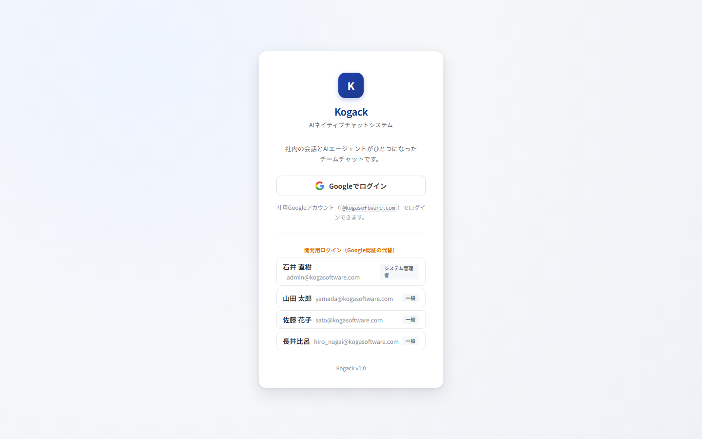
kogasoftware.com のみです。個人のGoogleアカウントや他社ドメインのアカウントではログインできません。会社アカウントでもログインできない場合は、システム管理者にアカウントが「有効」になっているか確認してください（13.1節）。Googleの同意画面で「キャンセル」を選んだ場合もログインは完了しません。もう一度「Googleでログイン」を押し、表示された内容を「許可」してください。
2.2 ログアウトする
サイドバー左下のユーザー情報の右にある「ログアウト」をクリックすると、ログアウトしてログイン画面に戻ります。共用のパソコンを使っている場合は、作業後に必ずログアウトしてください。
3. 画面の基本構成
ログイン後はどの画面でも、左側にサイドバーが常に表示されます。ここから各機能に移動します。

| 場所 | 項目 | 説明 |
|---|---|---|
| サイドバー上部 | 🕐（予約中のメッセージ） | 送信予約したメッセージの件数バッジ。クリックすると一覧が開く（12.3節） |
| 🔔（デスクトップ通知） | デスクトップ通知の許可・受け取る範囲を設定する（10.1節） | |
| チャンネル | 参加中のチャンネル一覧。未読は太字＋件数バッジ、自分宛てのメンションがあれば赤い「@件数」バッジになる（10.3節）。右の「＋」から参加・作成できる（4.1節） | |
| ダイレクトメッセージ | 参加中のDM一覧。右の「＋」からDM相手を選んで開始できる（8.1節） | |
| 文字サイズ | 画面全体の文字・表示の大きさを「小／標準／大／特大」の4段階で切り替える（文字を大きくする・小さくする。ブラウザに保存され次回も引き継がれる） | |
| 左下のユーザー情報 | 自分の氏名・ロールの表示。クリックするとプロフィール編集、右の「ログアウト」でログアウトする | |
| 🛠 管理コンソール | システム管理者にのみ表示されるリンク（13章） |
チャンネル・DMの一覧行に✏️マークが付いている場合は、そのチャンネル／DM／スレッドに送信していない下書きが残っていることを示します（5.6節）。
4. チャンネル
4.1 チャンネルを探す・参加する・作成する
サイドバー「チャンネル」の右にある「＋」をクリックすると、チャンネルの参加・作成モーダルが開きます。
- 「参加する」タブで、チャンネル名を検索します。 検索欄を空にすると、まだ参加していない公開チャンネルが一覧表示されます。
- 目的のチャンネルの「参加」をクリックします。 即座にそのチャンネルへ参加し、会話画面が開きます。
- 新しくチャンネルを作りたい場合は「作成する」タブに切り替え、チャンネル名・説明（任意）・公開／非公開を指定して作成します。作成した本人が自動的にそのチャンネルの管理者になります（12.1節）。
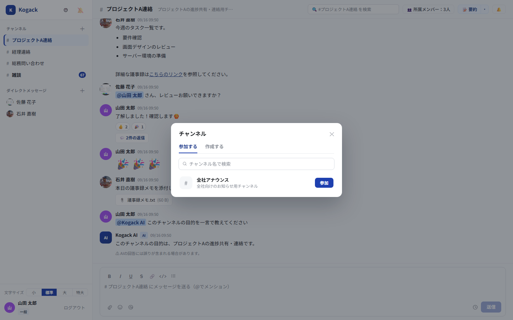
4.2 チャンネル会話画面の見方
チャンネルを開くと、ヘッダー・メッセージ一覧・投稿欄（Composer）の3つのエリアで構成された画面になります。
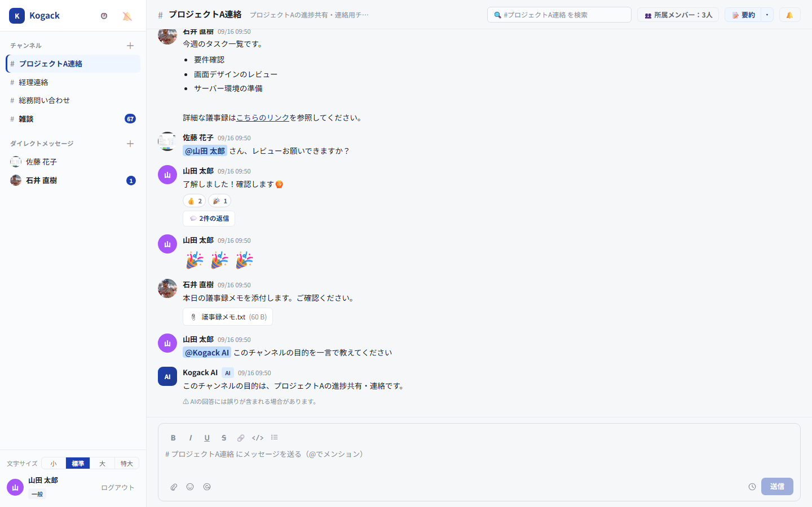
| ヘッダーの項目 | 説明 |
|---|---|
| チャンネル名・説明文 | 名前をクリックするとチャンネル情報（説明文・公開／非公開・作成者・作成日時）を確認できる。チャンネル管理者に限らず参加者なら誰でも確認可能 |
| 検索欄 | クリックするとこのチャンネルに絞り込んだ状態で横断検索画面へ移動する（9章） |
| 👥 所属メンバー：N人 | 参加者一覧を開く。非公開チャンネルへのメンバー追加もここから行う |
| 📝 要約 | 直近のやり取りをAIに要約してもらう（▾から対象期間も指定できる。11.2節） |
| 🔔（このチャンネルの通知） | このチャンネルだけデスクトップ通知の設定を上書きする（10.2節） |
| ⚙ チャンネル設定 | チャンネル管理者・システム管理者にのみ表示される（12章） |
4.3 チャンネルから退出する・メンバーを確認する
ヘッダーの「👥 所属メンバー」から開くモーダルの「チャンネル情報」タブに、そのチャンネルから退出するボタンがあります。「メンバー」タブでは各参加者の行から強制退出させることもできます（チャンネル管理者・システム管理者のみ）。いずれも、そのチャンネルの最後の1人のチャンネル管理者は退出・解除できません（管理者不在の防止）。
5. メッセージを送る
5.1 基本の送信操作
投稿欄にメッセージを入力し、Ctrl+Enter（Macは⌘+Enter）または右下の「送信」ボタンで送信します。Enterキー単体は改行になります（Slackと同じ操作感です）。1件あたり4,000文字まで入力できます。
5.2 書式を付ける
投稿欄の上にある書式ツールバーのボタン、または記法を直接入力することで、太字・斜体・下線・取り消し線・リンク・コード・箇条書きを使えます。文字列を選択してからボタンを押すと、その範囲を記法で囲みます。
| ボタン | 記法 | 効果 |
|---|---|---|
| B（太字） | **太字** | 太字になる |
| I（斜体） | _斜体_ | 斜体になる |
| U（下線） | ++下線++ | 下線が付く |
| S（取り消し線） | ~~取り消し線~~ | 取り消し線が付く |
| 🔗（リンク） | [表示文字](URL) | 短い表示文字でリンクを張る。押すとテキストとURLを入力するポップアップが開く |
| </>（コード） | `コード`（複数行選択で3連バッククォートのコードブロック） | 等幅フォント・背景色付きで表示される |
| ≡（箇条書き） | 行頭に - | 箇条書きになる。箇条書きの行でEnterを押すと次の行にも自動で付く |
また、URLを含む文章を送るとURLは自動的にリンク化され、クリックしてそのページを開けます。文章を選択した状態でURLを貼り付けると、選択していた文字列を表示名にしたリンクに変換されます。
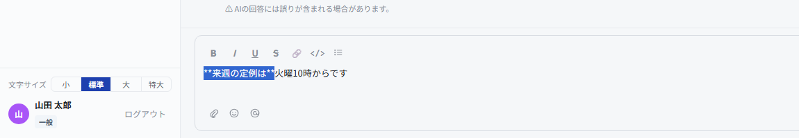
5.3 メンションする
投稿欄に「@」を入力すると、メンションできる相手の候補が一覧表示されます。↑↓キーとEnter（またはクリック）で選ぶと、本文に挿入されます。
| 候補 | 効果 |
|---|---|
| 特定の利用者（例: 山田 太郎） | その人だけに通知が届く |
| channel | チャンネルの参加者全員に通知が届く（Slackの@channel相当） |
| here | 送信した時点で実際にKogackを見ていた（直近30秒以内に操作していた）参加者だけに通知が届く（Slackの@here相当） |
| チャンネルAI（例: Kogack AI） | そのチャンネルのAIに呼びかける（11章）。チャンネルAIが有効なチャンネルのみ候補に出る |
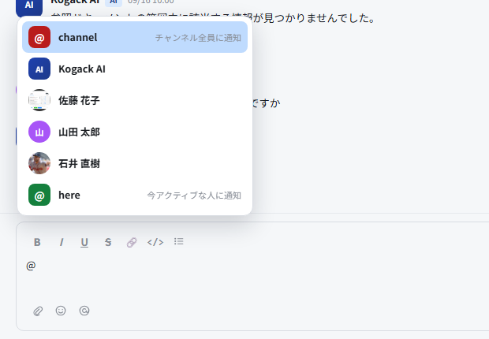
5.4 絵文字を送る
投稿欄下のスタンプアイコンをクリックすると、絵文字の一覧（ピッカー）が開きます。選ぶとカーソル位置に挿入されます。メッセージの本文が絵文字だけの場合は、通常より大きく表示されます（ジャンボ絵文字。図4-2の🎉を参照）。
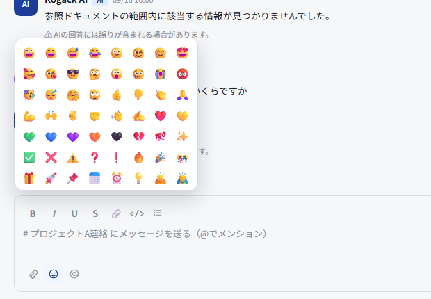
ピッカーの末尾にある「＋」をクリックすると、独自のカスタム絵文字を登録できます。名前（半角英数字・_・-、2〜24文字）と画像（JPEG・PNG・WebP、5MBまで）を指定して「追加する」を押すと登録され、以後は自分だけでなく他の利用者のピッカーにも表示されます。登録は利用者全員が行えます。登録した絵文字は:名前:という文字列としてメッセージ本文中に表示され、リアクション（6.3節）にも同じように使えます。
5.5 ファイルを添付する
投稿欄のクリップアイコンからファイルを選ぶと、送信前にアップロードされチップとして表示されます（✕で取り消し可）。1ファイルあたり20MBまで、形式の制限はありません。送信された添付ファイルは、画像・PDF・プレーンテキスト（txt/md/csv/json/log）であればクリックしてその場でプレビューでき、それ以外の形式はダウンロードのみになります。
5.6 下書きは自動保存される
送信せずに別のチャンネル・DM・スレッドへ移動しても、入力中の内容はブラウザ内に自動保存されます。戻ってくると復元され、下書きが残っているチャンネル・DM・スレッドはサイドバーや会話一覧に✏️マークで示されます。
6. メッセージを操作する
6.1 ホバーで出てくるアクション
メッセージにマウスを重ねると、右上にアクションバーが表示されます。
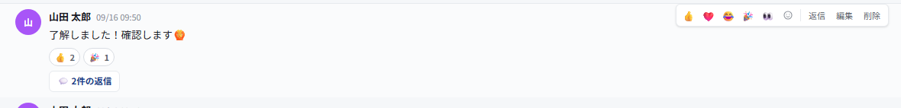
| アクション | 説明 |
|---|---|
| 👍❤️😂🎉👀（クイックリアクション） | クリックした絵文字でリアクションを付ける（もう一度押すと取り消す） |
| 😊（絵文字を選んでリアクション） | ピッカーから任意の絵文字を選んでリアクションを付ける |
| 返信 | そのメッセージにスレッドで返信する（7章） |
| 編集 | 自分が投稿したメッセージの本文を書き換える（6.4節） |
| 削除 | 自分の投稿、またはシステム管理者ならどの投稿でも削除できる（6.4節） |
| 🔍 送信内容（AI発言のみ） | そのAI発言を生成する際に実際にAPIへ送信した内容を確認する（チャンネル管理者・システム管理者のみ表示。11.5節） |
6.2 右クリックメニュー
メッセージを右クリックすると、「返信する」「編集する」「コピーする」「削除する」の4項目をメニュー形式でも呼び出せます（項目の表示条件は6.1節のホバー時アクションと同じで、編集・削除は自分の投稿のみ、削除はシステム管理者なら他人の投稿にも表示されます。コピーのみ誰の投稿でも常に表示されます）。「コピーする」を選ぶと本文をクリップボードにコピーします。「引用返信」「ピン留め」のような、これら4項目以外の操作はありません。
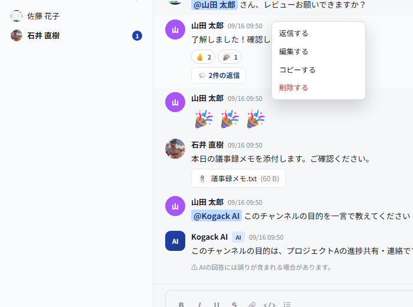
6.3 リアクションを付ける
付いているリアクションのピル（例: 👍 2）にカーソルを合わせると、誰が付けたかがポップアップで表示されます。ピルをクリックすると自分のリアクションを取り消せます（他人のリアクションは消えません）。同じメッセージに誰でも何個でも異なる絵文字でリアクションできます。😊（絵文字を選んでリアクション）のピッカー末尾の「＋」からは、5.4節と同じ手順でカスタム絵文字を登録してそのままリアクションに使えます。
6.4 編集する・削除する
編集は自分が投稿したメッセージのみ行えます（管理者でも他人の発言は編集できません）。「編集」を押すと本文がその場でテキストエリアに切り替わり、Ctrl+Enterで保存・Escapeで取消します。保存すると投稿時刻の隣に「（編集済み）」と表示されます。編集画面でも書式ボタン・絵文字・添付ファイルの追加/削除が使えます（ただし新たなメンションの追加はできません）。
削除は投稿者本人、またはシステム管理者が行えます。削除には確認が入り、取り消せません。なお、チャンネルへの参加・退出を知らせるシステム通知は、記録としての信頼性を保つため返信・削除の対象外です。
6.5 過去のメッセージをさかのぼる
会話画面は直近のメッセージのみを表示します。一覧の一番上に「▲ 古いメッセージを読み込む」ボタンが出ている場合はクリックすると、さらに古いメッセージを読み込めます。横断検索（9章）の結果からジャンプした場合は、その発言までさかのぼって薄いオレンジ色で一時的にハイライトされます。
7. スレッドで返信する
特定の発言に対して会話を続けたい場合はスレッドを使います。スレッド内のやり取りは本体の会話タイムラインには流れず、元の発言の下に「N件の返信」として表示されます。
- 返信したい発言をホバーし「返信」をクリックするか、既に返信がある発言の「N件の返信」をクリックします。 画面右側にスレッドパネルが開きます。
- スレッドパネル下部の投稿欄から返信を送信します。 通常の投稿欄と同じく書式・メンション・絵文字・ファイル添付が使えます。
- スレッドパネルの横幅は左端をドラッグして調整できます（次回開いたときも幅を引き継ぎます）。
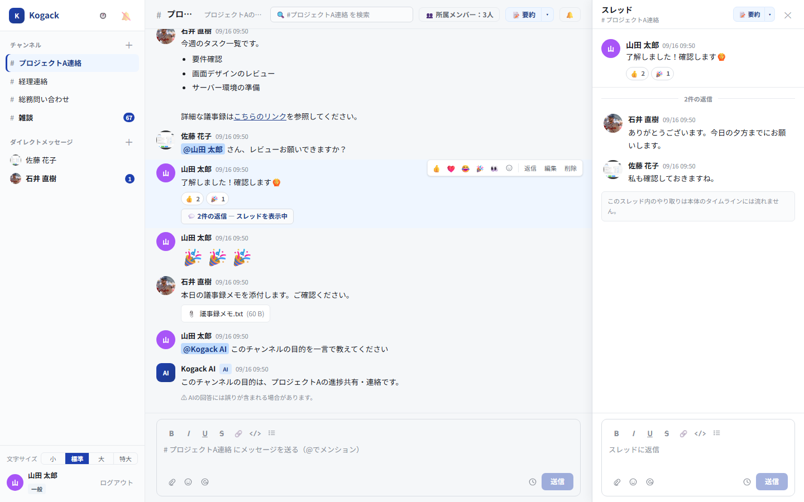
8. ダイレクトメッセージ（DM）
8.1 DMを始める
サイドバー「ダイレクトメッセージ」の右の「＋」をクリックすると、DM相手を選ぶモーダルが開きます。
- 氏名またはメールアドレスで検索します。
- 相手をチェックして「DMを開始する」をクリックします。 1人選べば1対1のDM、2人以上選べばグループDMになります。既に同じ組み合わせのDMがあれば、新規作成せずそのDMが開きます（「DM済み」の表示で確認できます）。
- 一覧の「自分」を選ぶと、メモ・下書き・To-doの保管に使える自分専用のDMを開始できます（8.3節）。無効化されたアカウントは「無効化済み」と表示され選択できません。
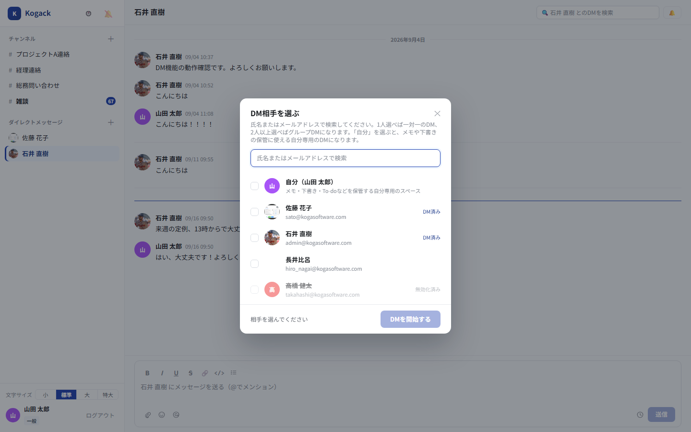
8.2 DM画面の見方
DM画面の構成はチャンネル会話とほぼ同じです。ヘッダーには相手（またはグループ）の氏名、検索欄（with:で絞り込んだ横断検索へ移動）、このDMだけの通知設定ボタンがあります。日付が変わった区切りと、開いた時点で未読だったメッセージの手前に「ここから未読メッセージ」の区切り線が表示されます。
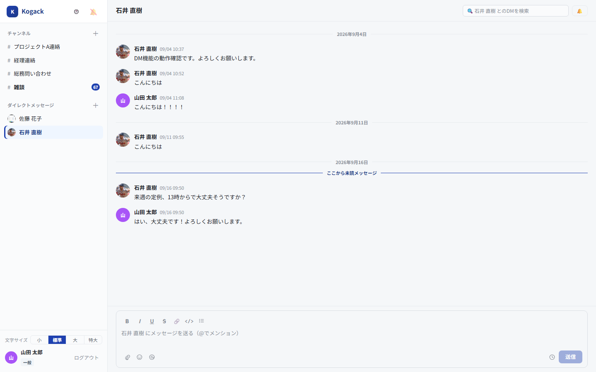
8.3 自分専用DM（メモ）
サイドバーには📝アイコン付きで「自分（メモ）」として表示されます。他の誰にも見えない、個人のメモ・下書き・To-do・リンクの保管用途に使えます。投稿・検索・添付ファイルなど、通常のDMと同じ機能がすべて使えます。
9. 検索する
チャンネル会話・DM画面ヘッダーの検索欄をクリックするか、横断検索画面（/search）を開くと、自分が参加しているすべてのチャンネル・DMのメッセージと添付ファイルを横断的に検索できます。
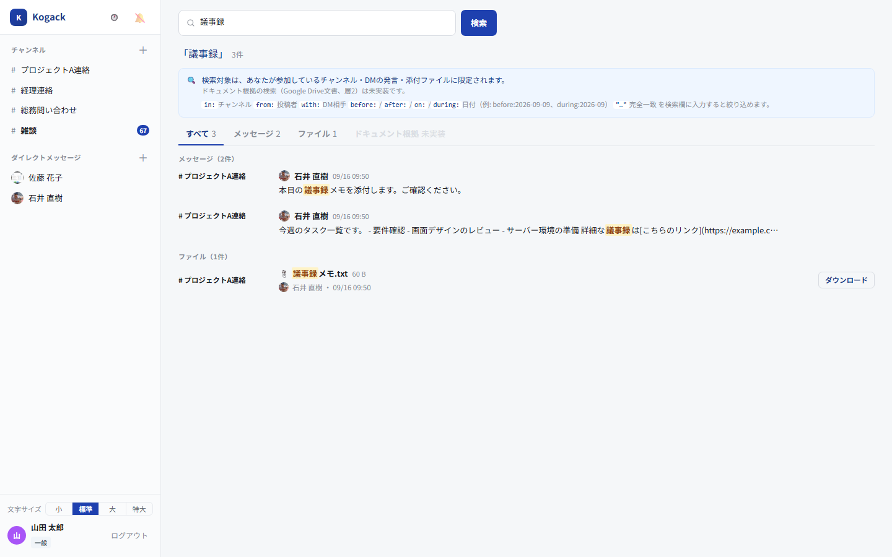
フリーワードに加え、次のモディファイア（条件指定子）を組み合わせられます。in:・from:・with:は入力中に候補ポップオーバーが開き、選んで確定します。before:・after:・on:・during:はカレンダー入力欄から日付を選べます。
| モディファイア | 意味 |
|---|---|
in:チャンネル名 | 指定したチャンネルの発言に絞り込む |
from:氏名 | 指定した投稿者の発言に絞り込む |
with:氏名 | 指定した相手とのDMに絞り込む |
before:2026-09-09 / after:2026-09-09 | 指定日より前／後に絞り込む |
on:2026-09-09 | 指定日当日に絞り込む |
during:2026-09 | 指定月に絞り込む |
"完全一致のフレーズ" | ダブルクォートで囲むと完全一致で検索する |
検索結果は「すべて／メッセージ／ファイル」タブで切り替えられます（クリックしても再検索はしません）。1タブに20件を超える結果がある場合は「もっと見る」で追加取得できます。「ドキュメント根拠」タブは、社内ドキュメントの内容そのものを横断検索する機能で、現時点では未実装のため常に無効表示です（チャンネルAIに直接質問すれば、AIがドキュメントを検索して回答することはできます。11.3節）。
10. 通知
10.1 デスクトップ通知を設定する
サイドバー左上の🔔をクリックすると、デスクトップ通知の設定ポップオーバーが開きます。
- 初回は「通知を有効にする」を押し、ブラウザの許可ダイアログで「許可」します。
- 受け取る範囲を選びます。 「すべての新着」「メンション・DMのみ」「オフ」の3択です。
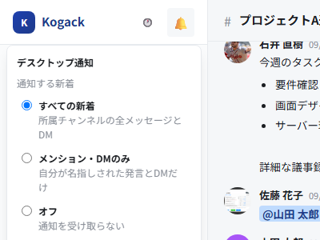
10.2 チャンネル・DMごとに通知を変える
チャンネル会話・DM画面ヘッダーの🔔からも、そのチャンネル・DM限定で通知設定を上書きできます（既定＝全体設定に従う）。「オフ」を選ぶと、そのチャンネル・DMはサイドバーの未読バッジも表示されなくなります（ミュート）。
10.3 未読・メンションの表示
| 表示 | 意味 |
|---|---|
| グレーの件数バッジ | 未読メッセージがある（自分宛てのメンションは含まない、または他のメンションも含む） |
| 赤い「@件数」バッジ | 自分宛てのメンション（@氏名・@channel・@here）を含む未読がある。件数の代わりに優先して表示される |
| ブラウザのタブタイトル | 未読の合計件数を (N) の形で先頭に表示する |
11. チャンネルAIに質問する
11.1 メンションして質問する
チャンネルAIが有効なチャンネルでは、本文中に「@Kogack AI」（チャンネルごとに名前を変更できます）のようにメンションして投稿すると、AIが同じチャンネルへ返信します。生成中は「生成中…」の点滅表示になり、長くかかりすぎる場合は誰でも「■ 中断」できます。チャンネルの設定によっては、メンションしなくても人間の発言に自発的に応答する「反応モード」になっている場合もあります（12.2節）。
11.2 やり取りを要約してもらう
チャンネルヘッダーの「📝 要約」ボタンを押すと、直近のやり取り（最大100件）をAIが要約してチャンネルへ投稿します。▾から「今日／今週／今月／直近7日間／直近30日間」または任意の期間を指定して要約することもできます。チャットで「@Kogack AI ○○を要約して」のように依頼しても同じ動作をします。要約結果には「📝 要約」バッジが付き、通常のAI応答と区別できます。スレッドパネルの「📝 要約」ボタンは、そのスレッド全体を要約します。メッセージを右クリックしたメニューやホバー時のアクションメニューには要約機能はありません（要約は個々のメッセージ単位ではなく、チャンネル・スレッド単位でのみ実行できます）。
11.3 社内ドキュメントを参照した回答
チャンネル設定の「参照ドキュメント範囲」（12.2節）でドキュメントが割り当てられているチャンネルでは、AIが必要に応じてそのドキュメントを検索してから回答します。回答の根拠にした文書は「📄 参照: ファイル名」として表示されます。AIの回答には誤りが含まれる場合があるため（11.4節）、実際に参照元を確認したいときは、対応形式（画像・PDF・プレーンテキスト）のファイル名をクリックするとアプリ上でそのまま内容を確認できます（そのチャンネルの参加者であれば誰でも見られます）。
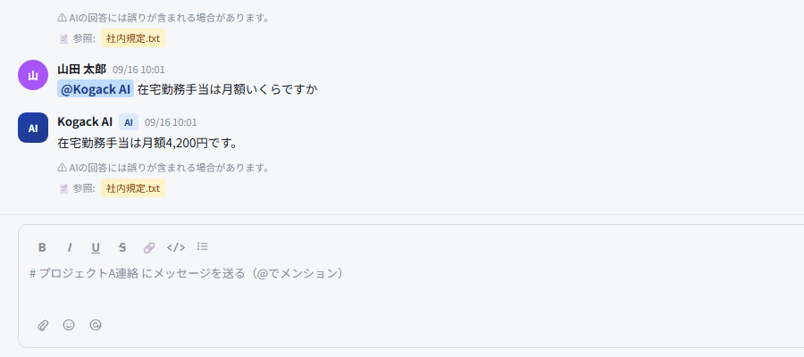
11.4 AIの回答について
11.5 AIへの実際の送信内容を確認する（チャンネル管理者向け）
AIの発言にマウスを重ねると出るホバーアクション（6.1節）の「🔍 送信内容」ボタン（そのチャンネルの管理者・システム管理者にのみ表示）を押すと、その発言を生成する際に実際にOpenAI APIへ送信したシステムプロンプト・会話履歴・ツール呼び出しの内容がそのまま確認できます。使用したAIモデル名・入出力トークン数・概算コストもあわせて表示されます。
12. チャンネル設定（チャンネル管理者向け）
チャンネル会話画面ヘッダーの「⚙ チャンネル設定」は、そのチャンネルの管理者、またはシステム管理者にのみ表示されます。左側のナビゲーションで各タブを切り替えます。設定内容を変更して保存せずに他の画面へ移動しようとすると、確認メッセージが表示されます。
12.1 チャンネル管理者タブ
チャンネル名・説明文の編集、公開／非公開の切り替え、チャンネル管理者の追加・解除、チャンネルの削除を行います。
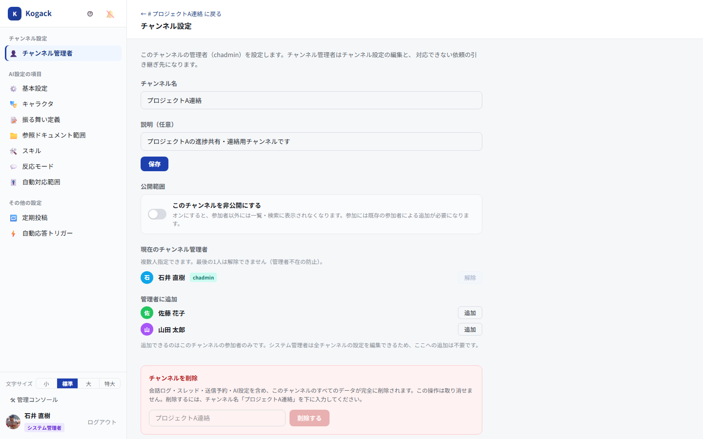
12.2 AI設定タブ群
「AI設定の項目」グループにある7つのタブで、そのチャンネルのAIの振る舞いを設定します。
| タブ | 設定内容 |
|---|---|
| 基本設定 | このチャンネルでAIを有効／無効にする。使用するAIモデルも選べる（速度重視ならgpt-4.1-nano・gpt-4.1-mini、コスト重視ならgpt-5-nano、応答品質重視なら既定のgpt-5-mini） |
| キャラクタ | AIの名前・アイコン画像・口調を設定する |
| 振る舞い定義 | AIの応答方針を自由記述で指定する。変更者・日時は監査ログ（13.4節）に記録される |
| 参照ドキュメント範囲 | 管理コンソールに登録済みのファイルから、このチャンネルのAIが参照してよい範囲を選ぶ（11.3節）。参照範囲外の質問に一般知識で答えてよいかも選べる |
| スキル | AIが対応できる業務の一覧と、どのスキルにも当てはまらない依頼の引き継ぎ先（参加者から選ぶ）を設定する |
| 反応モード | 「メンション時のみ応答」または「投稿に自ら反応」を選ぶ |
| 自動対応範囲 | 依頼内容のカテゴリごとに「自動対応可／確認のうえ対応／人が対応」を設定する |
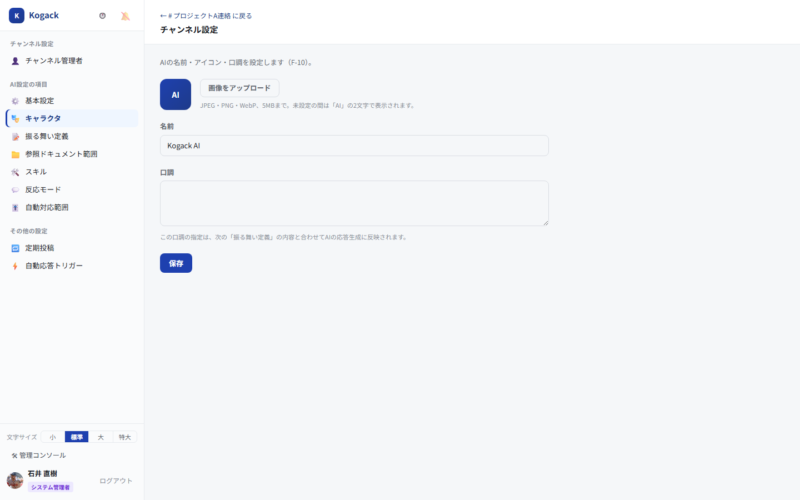
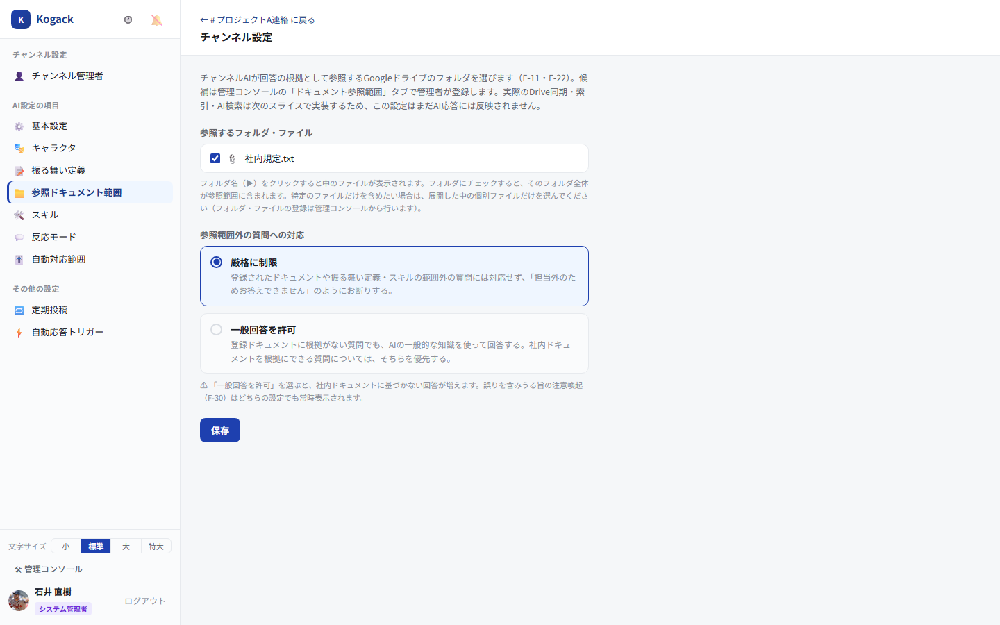
12.3 定期投稿・自動応答トリガー・送信予約
「その他の設定」グループの「定期投稿」タブでは、決まった時刻に自動投稿するメッセージ（毎日／毎週／毎月／月〜金／月末など）を登録できます。「自動応答トリガー」タブでは、特定のキーワード・絵文字を含む発言に自動でBOTが返信するルールを登録できます。いずれも本文に「@（チャンネルAIの名前）」を含めれば、投稿後にAIが応答することもできます。
投稿欄の🕐（送信日時を指定）から、通常のメッセージを指定した日時に1回だけ送信予約することもできます（定期投稿・自動応答トリガーと異なり、送信予約自体はチャンネル管理者専用の機能ではなく、そのチャンネル・DMの参加者であれば誰でも使えます）。
- 投稿欄にメッセージを入力します。（この時点ではまだ送信しません）
- 送信ボタンの隣にある🕐（送信日時を指定）アイコンをクリックします。
- 開いたポップオーバーで送信したい日付・時刻を選びます。
- ポップオーバー内の「予約する」ボタンを押します。（通常の送信ボタンやCtrl+Enterではなく、この「予約する」ボタンで確定します）
予約が完了すると、指定した日時に自動的に投稿されます。送信されるまでは自分だけが内容を確認・取り消しできます。予約中のメッセージは、サイドバー上部の🕐バッジ（予約確認ボタン）をクリックすると一覧が開き、確認・取り消しができます。
13. 管理コンソール（システム管理者向け）
サイドバー下部の「🛠 管理コンソール」は、システム管理者にのみ表示されます。4つのタブで構成されています。
13.1 利用者管理
登録済みの利用者の一覧、ロール（member／admin）の変更、アカウントの有効／無効の切り替えを行います。新規作成・削除はできません（Google認証での初回アクセス時に自動登録されるため）。退職者などアカウントを無効化すると、そのGoogleアカウントではログインできなくなります（過去の発言は削除されず残ります）。管理者は自分自身をロール変更・無効化できません（管理者不在の防止）。
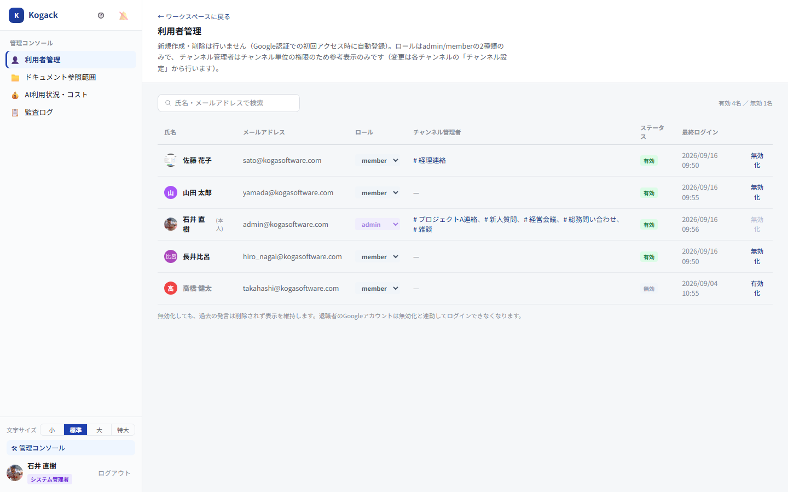
13.2 ドキュメント参照範囲
チャンネルAIが回答の根拠として参照できる社内ドキュメントを登録します。ファイルをドラッグ＆ドロップ、またはクリックして選択（フォルダごとの一括登録も可能）すると、自動でテキストが抽出・索引化され、AIが質問に応じて検索できるようになります。登録時に「限定公開にする」を選ぶと、指定した利用者だけが閲覧できるドキュメントとして扱われます（限定公開のドキュメントは、参加者全員が閲覧権限を持つ非公開チャンネルにのみ割り当てられます）。各チャンネルは、登録済みの候補の中から使う範囲をチャンネル設定側（12.2節）で選びます。画像・PDF・プレーンテキスト（txt/md/csv/json/log）のファイルは、一覧の「プレビュー」ボタンからアプリ上でそのまま内容を確認できます（それ以外の形式はプレビュー非対応で、ボタン自体が表示されません）。この機能はシステム管理者のみ利用できます。
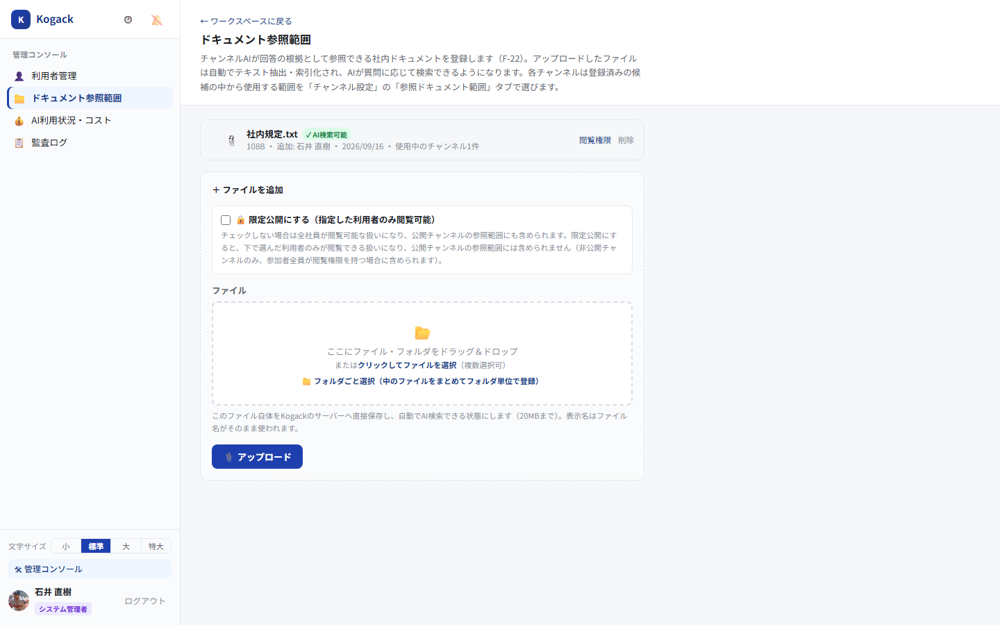
13.3 AI利用状況・コスト
月ごとのAI呼び出し件数・トークン数・概算コストを、チャンネル別・利用者別に集計して確認できます。質問文・回答文そのものは記録されません。チャンネルごとに月次の上限額と通知しきい値を設定することもできます。表示される金額は目安であり、正確な請求額は別途確認してください。
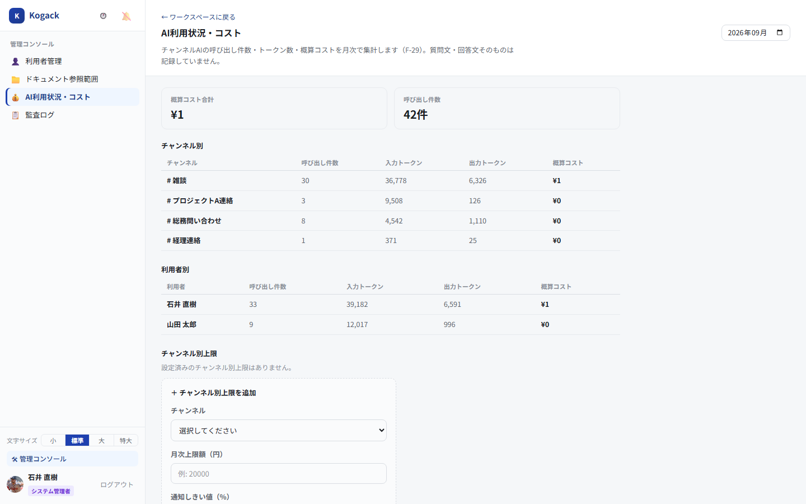
13.4 監査ログ
ログインと、チャンネルAI設定の変更（振る舞い定義・参照ドキュメント範囲など）を、いつ・誰が・どの項目を変更したかという単位で記録します。変更内容そのもの（差分・本文）は保持しません。種別・実行者・対象チャンネル・期間で絞り込んで確認できます。
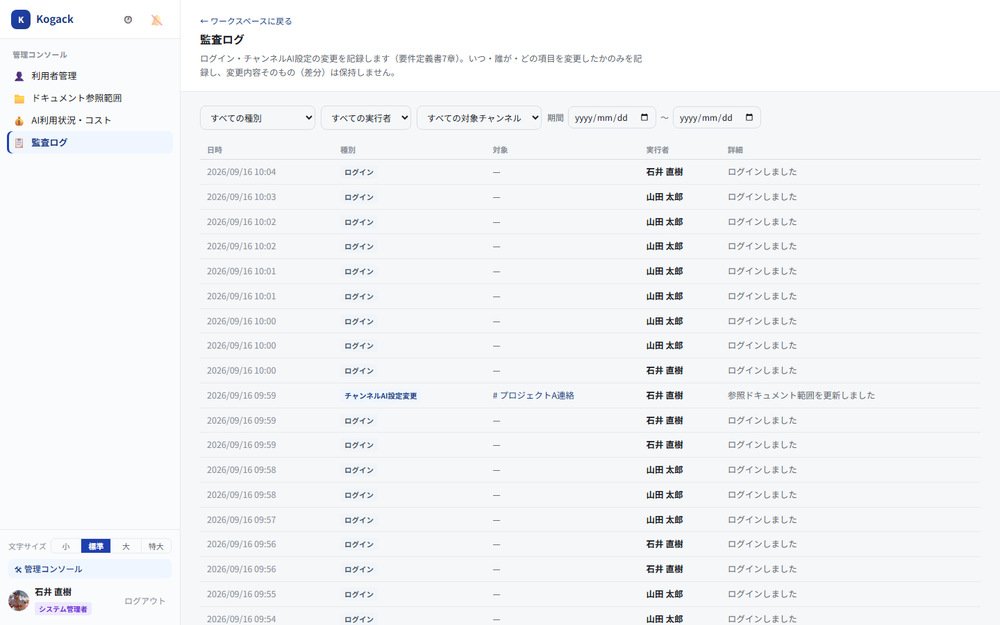
14. よくある質問・困ったとき
| 症状・質問 | 対処 |
|---|---|
| ログインできない | 社用Googleアカウント（@kogasoftware.com）でログインしているか確認してください。それでも入れない場合は、システム管理者にアカウントが「有効」か確認を依頼してください（13.1節）。 |
| 初めて使うが、利用登録は必要か | 不要です。社用Googleアカウントで初めてログインした時点で「一般」ロールとして自動的に登録されます（2.1節）。 |
| サイドバーに「🛠 管理コンソール」が出ない | ロールが「一般（member）」の場合は表示されません。管理コンソールを使う必要がある場合はシステム管理者にロール変更を依頼してください。 |
| 他の人の発言に「編集」ボタンが出ない | 編集は投稿者本人のみ行えます（管理者でも他人の発言は編集できません）。内容の修正は本人に依頼するか、削除（投稿者本人・管理者が可能）を依頼してください。 |
| チャンネルの「⚙ チャンネル設定」が見えない | そのチャンネルの管理者（chadmin）またはシステム管理者にのみ表示されます。既存の管理者に自分を追加してもらうか、システム管理者に依頼してください。 |
| 公開チャンネルに参加したい | サイドバー「チャンネル」の右の「＋」→「参加する」タブで検索→「参加」をクリックすれば自分だけの操作ですぐに参加できます。既存の参加者に「👥 所属メンバー」から「＋ メンバーを追加」で追加してもらうこともできます。 |
| 非公開チャンネルに参加したい | 非公開チャンネルは検索に出てこないため自分で参加することはできず、既存の参加者に「👥 所属メンバー」のメンバー一覧から追加してもらう必要があります。 |
| デスクトップ通知が届かない | ブラウザの通知許可がされているか（10.1節）、通知設定が「オフ」になっていないか（全体・チャンネル/DM個別の両方）を確認してください。ブラウザ側で通知がブロックされている場合はブラウザのサイト設定から許可してください。 |
| 「@Kogack AI」とメンションしても反応しない | そのチャンネルでチャンネルAIが無効になっている可能性があります（12.2節「基本設定」）。チャンネル管理者に確認を依頼してください。 |
| 検索してもヒットしない | 検索対象は自分が参加しているチャンネル・DMの発言・添付ファイルに限られます。モディファイア（9章）の日付形式はYYYY-MM-DD（during:のみYYYY-MM）です。 |
| 添付ファイルがプレビューできない | プレビューは画像・PDF・プレーンテキストのみ対応です。それ以外の形式（Word・Excel等）はダウンロードしてから確認してください。 |